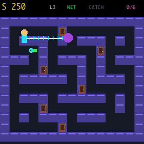

Game 01 · Monster-catching search
Find Your Best Friend
Explore the maze without getting caught, collect the net launcher, trap the monster and search every door until your best friend appears.
← Back to games
Controls
| Input | Action |
|---|---|
| D-pad | Move and face a direction |
| A | Fire the net or open a door |
| + | Start or retry |
| − | Return to menu |
Catch first
- Reach the green net launcher while avoiding the monster.
- Get within four maze tiles and press A to catch it.
- The captured monster is carried safely in a net.
- Three monster collisions end the search.
Then search
- Walk into a door to open it after the catch.
- Facing a door and pressing A works too.
- Wrong doors stay open and empty.
- Your friend always moves to a different door next game.